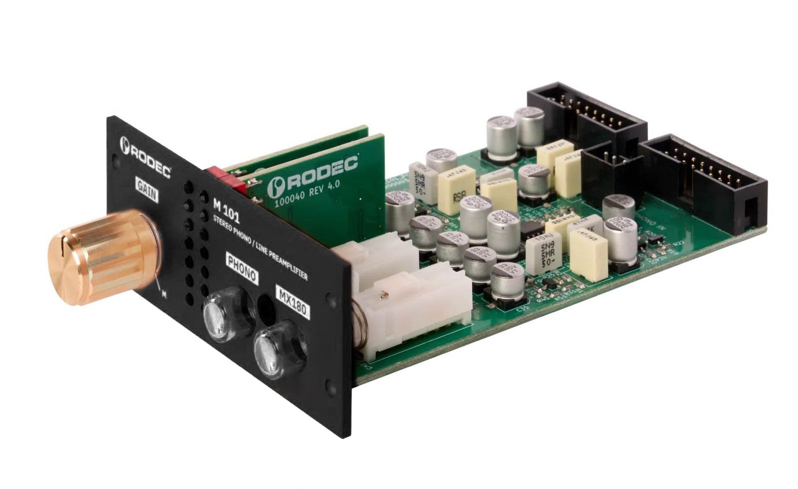
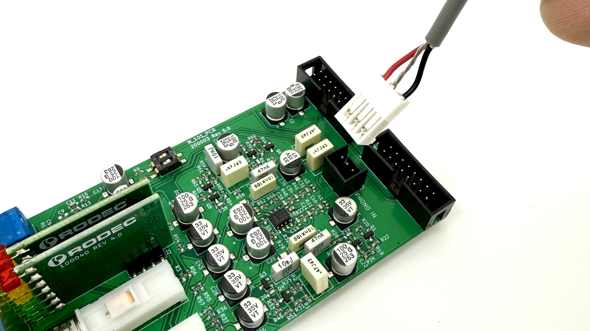
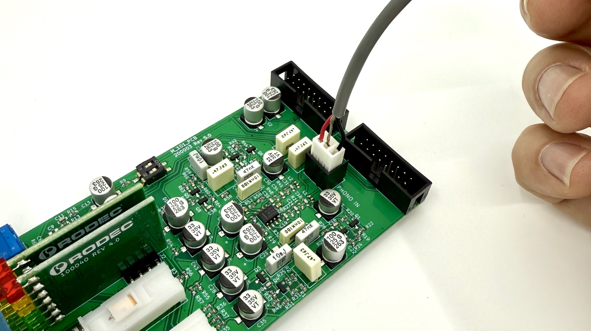
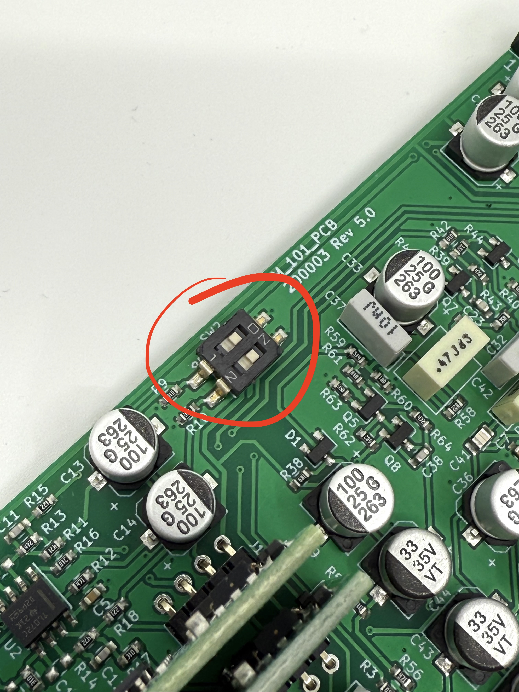

M-101 Dual Discrete Phono / Line Preamp

The M-101 is a flexible and high-quality preamp module offering dual phono stages, selectable input options, and customizable gain settings. Below is a detailed guide for its operation.
Input Selection: Phono or Line
The M-101 provides a "Phono" button for switching between the phono and line input sources:
- Phono Input:
- Activated when the Phono button is lit.
- Signal is sourced directly from the stereo phono socket on the PCB instead of via the 16 pins connector.
- The M-101 module has a stereo phono socket on the PCB:
- For all Rodec products, like MX Modular, Bunk, and future housings, RCA connectors and cables for the stereo phono socket are pre-installed. Simply connect the provided cable to the M-101 PCB's socket as shown in the pictures below (Phono Socket fig 1 &2).
- For custom housings, a separate connector cable can be purchased from our website.

Phono Socket fig 1

Phono Socket fig 2
- Line Input:
- Activated when the Phono button is unlit.
- Signal is sourced from the line input on the 16 pins audio input (see 100 series specification for pin layout). In Rodec Housings, all wiring is pre-installed.
Phono Stages: Two Distinct Options
The M-101 offers two selectable phono stages for different sonic characteristics:
- MX180 Stage:
- Recreates the classic Rodec party sound with a dynamic and lively tone.
- Press the MX180 button to activate this stage.
- Lit MX180 Button: MX180 phono stage is active.
- Discrete Stage:
- A new Rodec-engineered discrete phono stage for a deeper and more relaxed sound.
- Unlit MX180 Button: Discrete phono stage is active.
Gain Control
- The Gain Knob allows for precise level adjustments:
- Adjustable from 0 dB (attenuator only) to +20 dB of gain.
- Default factory setting is +20 dB max gain.
Adjusting Maximum Gain via PCB Dip Switches
The M-101 includes two dip switches on the PCB to customize the maximum gain:
- Factory Setting: Dip switches set to +20 dB max gain (ON).
- Alternate Setting: Flip the dip switches to set the max gain to 0 dB for unity gain or attenuation-only operation.
